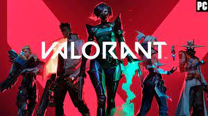
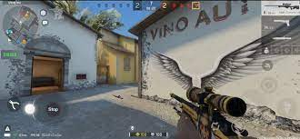
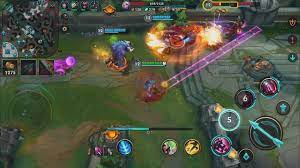

VOLVER AL MENU
tipos de juegos
aventuras
rpg
accion
simulacion
recomendacion de juegos
juegos que deberias probar
JUEGOS RECOMENDADOS
VALORANT
Valorant es un videojuego de disparos táctico en equipo y en primera persona ambientado en un futuro próximo.Los jugadores asumen el control de agentes, personajes que provienen de una gran cantidad de países y culturas de todo el mundo. En el modo de juego principal, los jugadores se unen al equipo atacante o defensor con cada equipo que tiene cinco jugadores. Los agentes tienen habilidades únicas y usan un sistema económico para comprar sus habilidades y armas.

CS:GO
Counter-Strike: Global Offensive (CS:GO) es un videojuego de disparos en primera persona desarrollado por Valve Corporation en cooperación con Hidden Path Entertainment, y es el cuarto juego de la saga Counter-Strike, sin contar Counter-Strike: Online. Fue lanzado como beta al mercado el 21 de agosto de 2012 para las plataformas de Microsoft Windows, Mac OS X y Xbox 360, mientras que sufrió un retraso en PlayStation 3. Posteriormente, la versión para Linux estuvo disponible al público el 22 de septiembre de 2014.

FORTNITE
Los modos de juego publicados incluyen Fortnite Battle Royale, un juego gratuito donde hasta cien jugadores luchan en una isla, en espacios cada vez más pequeños debido a la tormenta, para ser la última persona en pie, y Fortnite: Salvar el mundo, un juego cooperativo de hasta cuatro jugadores que consiste en luchar contra carcasas, criaturas parecidas a zombis, utilizando objetos y fortificaciones.
LOL
League of Legends (también conocido por sus siglas LoL) es un videojuego del género multijugador de arena de batalla en línea (MOBA) y deporte electrónico el cual fue desarrollado por Riot Games para Microsoft Windows y OS X y para consolas digitales. En un principio los servidores estaban alojados en la empresa GOA y fue vendida a la empresa china Tencent Holdings Limited.
